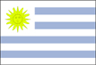
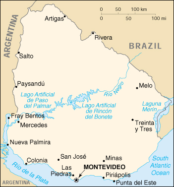

{kind=link}


| Uruguay |  |
|
|  | |
| Introduction |
Background: A violent Marxist urban guerrilla movement, the Tupamaros, launched in the late 1960s, led Uruguay's president to agree to military control of his administration in 1973. By the end of the year the rebels had been crushed, but the military continued to expand its hold throughout the government. Civilian rule was not restored until 1985. Uruguay has long had one of South America's highest standards of living; its political and labor conditions are among the freest on the continent.
| Geography |
Location: Southern South America, bordering the South Atlantic Ocean, between Argentina and Brazil
Geographic coordinates: 33 00 S, 56 00 W
Map references: South America
Area:
total:
176,220 sq km
land:
173,620 sq km
water:
2,600 sq km
Area - comparative: slightly smaller than the state of Washington
Land boundaries:
total:
1,564 km
border countries:
Argentina 579 km, Brazil 985 km
Coastline: 660 km
Maritime claims:
continental shelf:
200-m depth or to the depth of exploitation
territorial sea:
200 nm; overflight and navigation guaranteed beyond 12 nm
Climate: warm temperate; freezing temperatures almost unknown
Terrain: mostly rolling plains and low hills; fertile coastal lowland
Elevation extremes:
lowest point:
Atlantic Ocean 0 m
highest point:
Cerro Catedral 514 m
Natural resources: arable land, hydropower, minor minerals, fisheries
Land use:
arable land:
7%
permanent crops:
0%
permanent pastures:
77%
forests and woodland:
6%
other:
10% (1997 est.)
Irrigated land: 7,700 sq km (1997 est.)
Natural hazards: seasonally high winds (the pampero is a chilly and occasional violent wind which blows north from the Argentine pampas), droughts, floods; because of the absence of mountains, which act as weather barriers, all locations are particularly vulnerable to rapid changes in weather fronts
Environment - current issues: water pollution from meat packing/tannery industry; inadequate solid/hazardous waste disposal
Environment - international agreements:
party to:
Antarctic-Environmental Protocol, Antarctic Treaty, Biodiversity, Climate Change, Desertification, Endangered Species, Environmental Modification, Hazardous Wastes, Law of the Sea, Nuclear Test Ban, Ozone Layer Protection, Ship Pollution, Wetlands, Whaling
signed, but not ratified:
Climate Change-Kyoto Protocol, Marine Dumping, Marine Life Conservation
| People |
Population: 3,334,074 (July 2000 est.)
Age structure:
0-14 years:
24% (male 417,288; female 397,125)
15-64 years:
63% (male 1,030,201; female 1,057,968)
65 years and over:
13% (male 178,393; female 253,099) (2000 est.)
Population growth rate: 0.77% (2000 est.)
Birth rate: 17.42 births/1,000 population (2000 est.)
Death rate: 9.06 deaths/1,000 population (2000 est.)
Net migration rate: -0.63 migrant(s)/1,000 population (2000 est.)
Sex ratio:
at birth:
1.06 male(s)/female
under 15 years:
1.05 male(s)/female
15-64 years:
0.97 male(s)/female
65 years and over:
0.7 male(s)/female
total population:
0.95 male(s)/female (2000 est.)
Infant mortality rate: 15.14 deaths/1,000 live births (2000 est.)
Life expectancy at birth:
total population:
75.24 years
male:
71.9 years
female:
78.75 years (2000 est.)
Total fertility rate: 2.37 children born/woman (2000 est.)
Nationality:
noun:
Uruguayan(s)
adjective:
Uruguayan
Ethnic groups: white 88%, mestizo 8%, black 4%, Amerindian, practically nonexistent
Religions: Roman Catholic 66% (less than one-half of the adult population attends church regularly), Protestant 2%, Jewish 2%, nonprofessing or other 30%
Languages: Spanish, Portunol, or Brazilero (Portuguese-Spanish mix on the Brazilian frontier)
Literacy:
definition:
age 15 and over can read and write
total population:
97.3%
male:
96.9%
female:
97.7% (1995 est.)
| Government |
Country name:
conventional long form:
Oriental Republic of Uruguay
conventional short form:
Uruguay
local long form:
Republica Oriental del Uruguay
local short form:
Uruguay
Data code: UY
Government type: republic
Capital: Montevideo
Administrative divisions: 19 departments (departamentos, singular - departamento); Artigas, Canelones, Cerro Largo, Colonia, Durazno, Flores, Florida, Lavalleja, Maldonado, Montevideo, Paysandu, Rio Negro, Rivera, Rocha, Salto, San Jose, Soriano, Tacuarembo, Treinta y Tres
Independence: 25 August 1825 (from Brazil)
National holiday: Independence Day, 25 August (1825)
Constitution: 27 November 1966, effective February 1967, suspended 27 June 1973, new constitution rejected by referendum 30 November 1980; two constitutional reforms approved by plebiscite 26 November 1989 and 7 January 1997
Legal system: based on Spanish civil law system; accepts compulsory ICJ jurisdiction
Suffrage: 18 years of age; universal and compulsory
Executive branch:
chief of state:
President Jorge BATLLE (since 1 March 2000) and Vice President Luis HIERRO (since 1 March 2000); note - the president is both the chief of state and head of government
head of government:
President Jorge BATLLE (since 1 March 2000) and Vice President Luis HIERRO (since 1 March 2000); note - the president is both the chief of state and head of government
cabinet:
Council of Ministers appointed by the president with parliamentary approval
elections:
president and vice president elected on the same ticket by popular vote for five-year terms; election last held 31 October 1999 with run-off election on 28 November 1999 (next to be held NA 2004)
election results:
Jorge BATLLE elected president; percent of vote - 52% in a runoff against Tabare VAZQUEZ
Legislative branch:
bicameral General Assembly or Asamblea General consists of Chamber of Senators or Camara de Senadores (30 seats; members are elected by popular vote to serve five-year terms) and Chamber of Representatives or Camara de Representantes (99 seats; members are elected by popular vote to serve five-year terms)
elections:
Chamber of Senators - last held 31 October 1999 (next to be held NA 2004); Chamber of Representatives - last held 31 October 1999 (next to be held NA 2004)
election results:
Chamber of Senators - percent of vote by party - NA; seats by party - Encuentro Progresista 12, Colorado Party 10, Blanco 7, New Sector/Space Coalition 1; Chamber of Representatives - percent of vote by party - NA; seats by party - Encuentro Progresista 40, Colorado Party 33, Blanco 22, New Sector/Space Coalition 4
Judicial branch: Supreme Court, judges are nominated by the president and elected for 10-year terms by the General Assembly
Political parties and leaders: Batlleist faction of the Colorado Party [Julio M. SANGUINETTI]; Broad Front Coalition [Tabare VAZQUEZ]; Colorado Party [Jorge BATLLE]; Herrerista faction of the National Party [Luis A. LACALLE]; Herrero Wilsonista faction of the National Party [Alaberto VOLONTE]; National Party or Blanco [Luis A. LACALLE]; New Sector/Space Coalition or Nuevo Espacio [Rafael MICHELINI]; Progressive Encounter in the Broad Front or Encuentro Progresista [Tabare VAZQUEZ]
International organization participation: CCC, ECLAC, FAO, G-11, G-77, IADB, IAEA, IBRD, ICAO, ICC, ICRM, IFAD, IFC, IFRCS, IHO, ILO, IMF, IMO, Intelsat, Interpol, IOC, IOM, ISO, ITU, LAES, LAIA, Mercosur, MINURSO, MONUC, NAM (observer), OAS, OPANAL, OPCW, PCA, RG, UN, UNCTAD, UNESCO, UNIDO, UNIKOM, UNMOGIP, UNMOT, UNOMIG, UNTAET, UPU, WCL, WFTU, WHO, WIPO, WMO, WToO, WTrO
Diplomatic representation in the US:
chief of mission:
Ambassador Alvaro DIEZ DE MEDINA Suarez
chancery:
2715 M Street, NW, Washington, DC 20007
telephone:
[1] (202) 331-1313 through 1316
FAX:
[1] (202) 331-8142
consulate(s) general:
Chicago, Los Angeles, Miami, and New York
Diplomatic representation from the US:
chief of mission:
Ambassador Christopher C. ASHBY
embassy:
Lauro Muller 1776, Montevideo
mailing address:
APO AA 34035
telephone:
[598] (2) 23 60 61, 48 77 77
FAX:
[598] (2) 48 86 11
Flag description: nine equal horizontal stripes of white (top and bottom) alternating with blue; there is a white square in the upper hoist-side corner with a yellow sun bearing a human face known as the Sun of May and 16 rays alternately triangular and wavy
| Economy |
Economy - overview: Uruguay's economy is characterized by an export-oriented agricultural sector, a well-educated workforce, relatively even income distribution, and high levels of social spending. After averaging growth of 5% annually in 1996-98, in 1999 the economy suffered from lower demand in Argentina and Brazil, which together account for about half of Uruguay's exports. Despite the severity of the trade shocks and ensuing recession, Uruguay's financial indicators remained more stable than those of its neighbors, a reflection of its solid reputation among investors and its investment-grade sovereign bond rating - one of only two in Latin America. Challenges for the government of incoming President Jorge BATLLE include expanding Uruguay's trade ties beyond its Mercosur trade partners and bolstering Uruguay's competitiveness by increasing labor market flexibility and reducing the costs of public services. Growth should recover in 2000, to perhaps 3%.
GDP: purchasing power parity - $28 billion (1999 est.)
GDP - real growth rate: -2.5% (1999 est.)
GDP - per capita: purchasing power parity - $8,500 (1999 est.)
GDP - composition by sector:
agriculture:
10%
industry:
28%
services:
62% (1999)
Population below poverty line: NA%
Household income or consumption by percentage share:
lowest 10%:
NA%
highest 10%:
NA%
Inflation rate (consumer prices): 4% (1999 est.)
Labor force: 1.38 million (1997 est.)
Labor force - by occupation: agriculture NA%, industry NA%, services NA%
Unemployment rate: 12% (1999)
Budget:
revenues:
$4.4 billion
expenditures:
$4.6 billion, including capital expenditures of $500 million (1998 est.)
Industries: food processing, electrical machinery, transportation equipment, petroleum products, textiles, chemicals, beverages
Industrial production growth rate: -4% (1999 est.)
Electricity - production: 9.474 billion kWh (1998)
Electricity - production by source:
fossil fuel:
3.91%
hydro:
95.62%
nuclear:
0%
other:
0.47% (1998)
Electricity - consumption: 6.526 billion kWh (1998)
Electricity - exports: 2.363 billion kWh (1998)
Electricity - imports: 78 million kWh (1998)
Agriculture - products: wheat, rice, barley, corn, sorghum; livestock; fish
Exports: $2.1 billion (f.o.b., 1999 est.)
Exports - commodities: meat, rice, leather products, vehicles, dairy products, wool, electricity
Exports - partners: Mercosur partners 45%, EU 20%, US 7% (1999 est.)
Imports: $3.4 billion (f.o.b., 1999 est.)
Imports - commodities: road vehicles, electrical machinery, metal manufactures, heavy industrial machinery, crude petroleum
Imports - partners: MERCOSUR partners 43%, EU 20%, US 11% (1999 est.)
Debt - external: $8 billion (1999 est.)
Economic aid - recipient: $NA
Currency: 1 Uruguayan peso ($Ur) = 100 centesimos
Exchange rates: Uruguayan pesos ($Ur) per US$1 - 11.3393 (1999), 10.4719 (1998), 9.4418 (1997), 7.9718 (1996), 6.3490 (1995), 5.0439 (1994)
Fiscal year: calendar year
| Communications |
Telephones - main lines in use: 622,000 (1995)
Telephones - mobile cellular: 40,000 (1995)
Telephone system:
some modern facilities
domestic:
most modern facilities concentrated in Montevideo; new nationwide microwave radio relay network
international:
satellite earth stations - 2 Intelsat (Atlantic Ocean)
Radio broadcast stations: AM 94, FM 115, shortwave 14 (seven are inactive) (1998)
Radios: 1.97 million (1997)
Television broadcast stations: 26 (plus ten low-power repeaters for the Montevideo station) (1997)
Televisions: 782,000 (1997)
Internet Service Providers (ISPs): 5 (1999)
| Transportation |
Railways:
total:
2,073 km
standard gauge:
2,073 km 1.435-m gauge (1997)
Highways:
total:
8,983 km
paved:
8,085 km
unpaved:
898 km (1999 est.)
Waterways: 1,600 km; used by coastal and shallow-draft river craft
Ports and harbors: Fray Bentos, Montevideo, Nueva Palmira, Paysandu, Punta del Este, Colonia, Piriapolis
Merchant marine:
total:
1 ship (1,000 GRT or over) totaling 1,807 GRT/2,405 DWT
ships by type:
petroleum tanker 1 (1999 est.)
Airports: 65 (1999 est.)
Airports - with paved runways:
total:
15
2,438 to 3,047 m:
1
1,524 to 2,437 m:
5
914 to 1,523 m:
8
under 914 m:
1 (1999 est.)
Airports - with unpaved runways:
total:
50
1,524 to 2,437 m:
2
914 to 1,523 m:
15
under 914 m:
33 (1999 est.)
| Military |
Military branches: Army, Navy (includes Naval Air Arm, Coast Guard, Marines), Air Force, Police (Coracero Guard, Grenadier Guard)
Military manpower - availability:
males age 15-49:
810,490 (2000 est.)
Military manpower - fit for military service:
males age 15-49:
656,492 (2000 est.)
Military expenditures - dollar figure: $172 million (FY98)
Military expenditures - percent of GDP: 0.9% (FY98)
| Transnational Issues |
Disputes - international: two short sections of the boundary with Brazil are in dispute - Arroyo de la Invernada (Arroio Invernada) area of the Rio Cuareim (Rio Quarai) and the islands at the confluence of the Rio Cuareim (Rio Quarai) and the Uruguay River